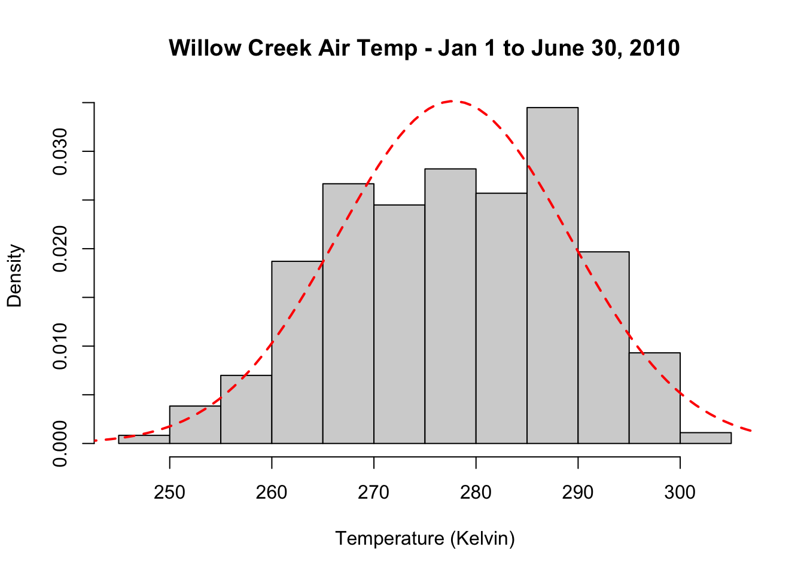
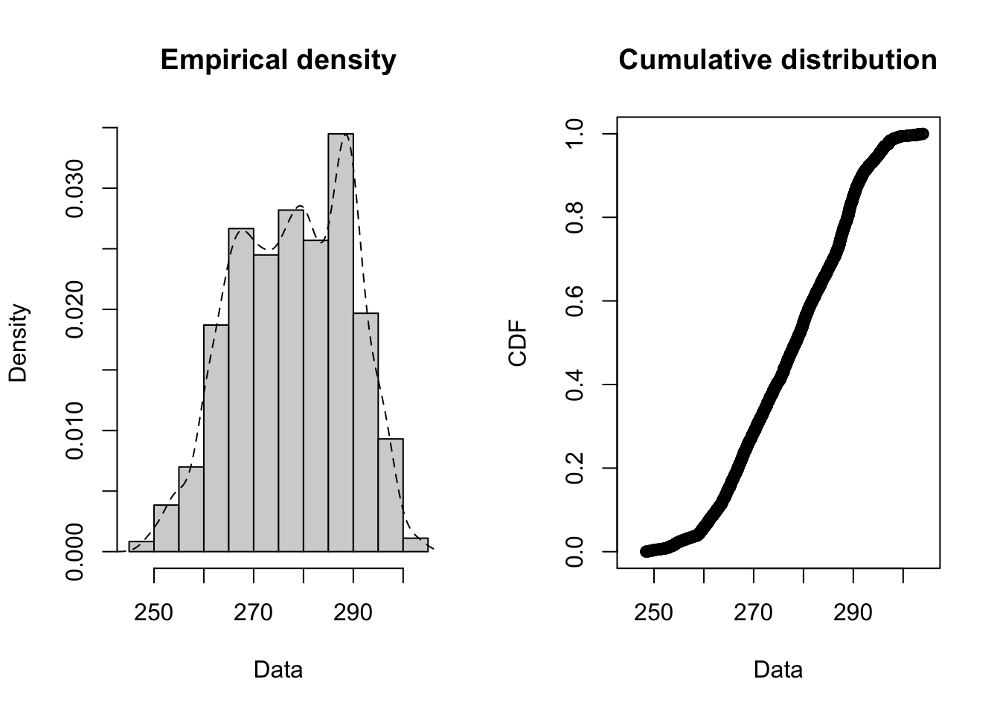
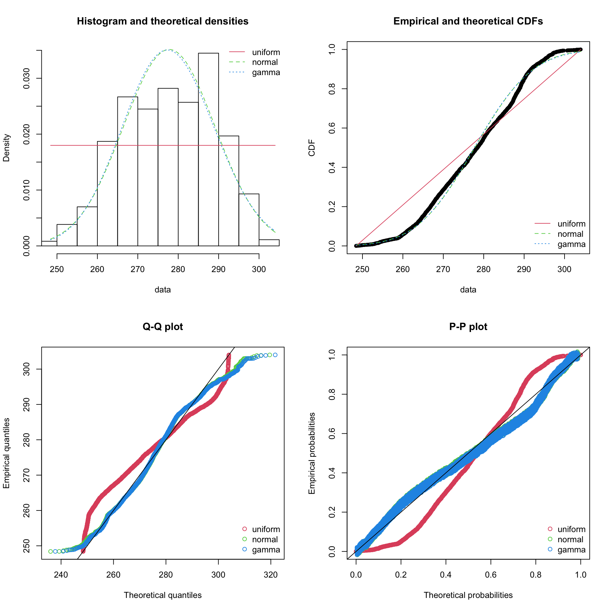

11 Basic Statistics
This week we’ll be diving into some basic statistical procedures. R started out as THE statistical programming language. It spread like wildfire for it’s performance and efficiency at crunching numbers. It’s early success as a statistical programming langugae attracted the early developers who really made R into the do-it-all language we’re using today. First, I’ll throw in the useful definitions list at the top of this tutorial just for ease of access. Second, we’ll dive into a recap of for loops and how they’re structured. Then we’ll show off some of R’s great statistics functions and how to add them to a plot. Finally, we’ll have an assignment where we cover some of
11.1 Statistical Function Dictionary
| Function | Description |
|---|---|
| length | returns length of a vector |
| sum | returns the sum |
| mean | returns the mean |
| median | returns the median |
| sd | returns the standard deviation (n − 1 in denominator) |
| min | returns minimum |
| max | returns maximum |
| sort | sort a vector (rearranges the vector in order) |
| order | returns indices of vectors that will order them |
| rank | returns rank of each element in vector |
| lm | multiple linear regression |
| glm | generalized linear regression |
| anova | analysis of variance |
| chisq.test | Pearson’s Chi-squared test for count data |
| summary | shows results of various model fitting functions |
| predict | predicted results from model |
| passing | an lm object will result in adding the predicted line to the plot |
| sample | produces a random sample of the specified values |
| set.seed | sets seed for next random sample (repeat random sample) |
| rnorm | produces a random sample from a normal distribution |
| qnorm | quantiles (percentiles) of normal distribution |
| pnorm | CDF of normal distribution |
| dnorm | PDF of normal distribution |
| rbinom | produces a random sample from a binomial distribution |
| fitdistrplus | package that helps find the fit of univariat eparametric distributions |
| plotdist | empirical distribution plotting function |
| descdist | Computes descriptive parameters of an empirical distribution and provides a skewness-kurtosis plot |
| fitdist | Fits various distributions to data |
| denscomp | plots the histogram against fitted density functions |
| cdfcomp | lots the empirical cumulative distribution against fitted distribution functions |
| qqcomp | plots theoretical quantiles against empirical ones |
| ppcomp | plots theoretical probabilities against empirical ones |
11.2 Basic Statistics in R
R is famous for it’s easy-to-use statistics features and once you get the hang of it you’ll never want to touch Microsoft Excel again. Despite the fact that these stats functions seem pretty fancy to me, I call them basic functions because R has so much to offer to statisticians. In this tutorial, we examine meteorological observations that were recorded in Willow Creek Wisconsin, USA. There are 3 years of Willow Creek data - WCr_1hr.2010.nc, WCr_1hr.2011.nc, WCr_1hr.2012.nc. Let’s start with the 2010 dataset.
11.2.1 Load Willow Creek data
library(ncdf4)
# open the netcdf file of Willow Creek, Wisconsin meteorology data
nc_file = nc_open("/Users/james/Documents/Github/geog473-673/datasets/WCr_1hr.2010.nc")
# what does the nc file look like
nc_file## File /Users/james/Documents/Github/geog473-673/datasets/WCr_1hr.2010.nc (NC_FORMAT_CLASSIC):
##
## 10 variables (excluding dimension variables):
## float air_temperature[latitude,longitude,time]
## units: Kelvin
## _FillValue: -999
## float air_temperature_max[latitude,longitude,time]
## units: Kelvin
## _FillValue: -999
## float air_temperature_min[latitude,longitude,time]
## units: Kelvin
## _FillValue: -999
## float surface_downwelling_longwave_flux_in_air[latitude,longitude,time]
## units: W/m2
## _FillValue: -999
## float air_pressure[latitude,longitude,time]
## units: Pascal
## _FillValue: -999
## float surface_downwelling_shortwave_flux_in_air[latitude,longitude,time]
## units: W/m2
## _FillValue: -999
## float eastward_wind[latitude,longitude,time]
## units: m/s
## _FillValue: -999
## float northward_wind[latitude,longitude,time]
## units: m/s
## _FillValue: -999
## float specific_humidity[latitude,longitude,time]
## units: g/g
## _FillValue: -999
## float precipitation_flux[latitude,longitude,time]
## units: kg/m2/s
## _FillValue: -999
##
## 3 dimensions:
## latitude Size:1
## units: degree_north
## long_name: latitude
## longitude Size:1
## units: degree_east
## long_name: longitude
## time Size:8760 *** is unlimited ***
## units: sec
## long_name: time## [1] "air_temperature"
## [2] "air_temperature_max"
## [3] "air_temperature_min"
## [4] "surface_downwelling_longwave_flux_in_air"
## [5] "air_pressure"
## [6] "surface_downwelling_shortwave_flux_in_air"
## [7] "eastward_wind"
## [8] "northward_wind"
## [9] "specific_humidity"
## [10] "precipitation_flux"# alright, now we have some names, so let's put the variables into a new dataframe separate from the nc_file
var_names = names(nc_file$var)
willow_creek_2010 = list()
dim <- nc_file$dim
for (v in seq_along(var_names)){
willow_creek_2010[[v]] = ncvar_get(nc_file, varid = var_names[v])
}
# convert the list into a dataframe
wcreek_df = data.frame(willow_creek_2010)
# tell the dataframe what the column names are
colnames(wcreek_df) = var_names
# let's rename the variables to make them shorter - note that these short names MUST be in the same order as the longer names
short_names = c("tair", "tmax", "tmin", "lwave", "pres", "swave", "ewind", "nwind", "shum", "prec")
# rename the column names to our new short name vector
colnames(wcreek_df) = short_names
# print the first few lines
head(wcreek_df)## tair tmax tmin lwave pres swave ewind nwind
## 1 260.1135 260.137 260.090 237.6100 95704.5 0 1.522976 -1.462524
## 2 260.0315 260.044 260.019 241.6900 95735.5 0 1.624952 -1.563508
## 3 259.9805 259.994 259.967 240.3500 95765.5 0 1.696362 -1.553177
## 4 259.9005 259.941 259.860 240.9325 95795.5 0 1.493329 -1.702995
## 5 259.7585 259.780 259.737 247.3875 95824.5 0 1.921457 -1.460475
## 6 259.6825 259.693 259.672 246.5075 95853.0 0 1.963118 -1.667144
## shum prec
## 1 0.001176792 0
## 2 0.001170627 0
## 3 0.001167514 0
## 4 0.001160727 0
## 5 0.001142952 0
## 6 0.001133232 0Our data has been read in and the variables have been renamed for our convenience. A major note here is that the replacement names must be in the same order as the variable names. Now, we turn our attnetion to the time component of this data. This is a time series dataset of weather variables so we’ll need a time variable to keep us organized. Here’s how we can create one…
## [1] "sec"## [1] 3600 7200 10800 14400 18000 21600 25200 28800 32400 36000# we can back out that this data is hourly data just from knowing the units are seconds and time between
# each recorded value is 3600 (3600 seconds == 1 hour)
#### Add a datetime column ####
date.seq = seq(as.POSIXct("2010-01-01 00:00:00"), as.POSIXct("2010-12-31 23:00:00"), by="hour")
wcreek_df['datetime'] = date.seq
wcreek_df$datetime[1:10]## [1] "2010-01-01 00:00:00 EST" "2010-01-01 01:00:00 EST"
## [3] "2010-01-01 02:00:00 EST" "2010-01-01 03:00:00 EST"
## [5] "2010-01-01 04:00:00 EST" "2010-01-01 05:00:00 EST"
## [7] "2010-01-01 06:00:00 EST" "2010-01-01 07:00:00 EST"
## [9] "2010-01-01 08:00:00 EST" "2010-01-01 09:00:00 EST"The data is loaded, organized, and ready for statistical analysis.
11.2.2 Subsetting Data
In certain cases, our dataset may be too large. For example, our dataset contains 1 year of data. How can we subset our dataset from January 1 to June 30?
We can use the which function to find out which row a particular datetime is located. In other words, the which function returns the dates index position. In order for this to work, the datetime format we use must match the datetime format of the dataset. In our case, the datetime is YYYY-mm-dd, so we need to search with that format. After we have our indices, we can subset the wcreek_df dataset using wcreek_df[rows,columns] subsetting rules.
# use YYYY-mm-dd to return which datettime index has a value of 2010-01-01
start_ind = which(wcreek_df$datetime == "2010-01-01")
# use YYYY-mm-dd to return which datettime index has a value of 2010-06-30
end_ind = which(wcreek_df$datetime == "2010-06-30")
# Index our wcree_df dataframe using the indices gathered above. We want all columns so column section stays blank
jan2jun = wcreek_df[start_ind:end_ind,]Note that there is also a subset function which is handy, but unreliable. Sometimes this function produces unintended consequences so the above method is the preferred for subsetting data.
11.2.3 Trends and Distributions
Our dataset has been subset from January 1 to June 30. In the Northern Hemisphere, we would expect air temperature to increase from January to June. Let’s examine this and fit a trendline to the data.
# air temperature ~ datetime - remember, the tilde (~) here can be thought of as 'versus' or 'against'.
# So this plot is tair versus datetime
plot(tair ~ datetime, data = jan2jun, pch = 20, col="blue")
# use the lm function to fit a trendline to the data
fit <- lm(tair ~ datetime, data = jan2jun)
summary(fit)##
## Call:
## lm(formula = tair ~ datetime, data = jan2jun)
##
## Residuals:
## Min 1Q Median 3Q Max
## -17.7070 -3.6385 -0.2478 3.7455 19.0279
##
## Coefficients:
## Estimate Std. Error t value Pr(>|t|)
## (Intercept) -2.501e+03 2.446e+01 -102.3 <2e-16 ***
## datetime 2.188e-06 1.926e-08 113.6 <2e-16 ***
## ---
## Signif. codes: 0 '***' 0.001 '**' 0.01 '*' 0.05 '.' 0.1 ' ' 1
##
## Residual standard error: 5.683 on 4318 degrees of freedom
## Multiple R-squared: 0.7493, Adjusted R-squared: 0.7493
## F-statistic: 1.291e+04 on 1 and 4318 DF, p-value: < 2.2e-16## (Intercept) datetime
## -2.501181e+03 2.187997e-06plot(tair ~ datetime, data = jan2jun,
main= "tair vs. datetime",
ylab= "Air Temperature ( Kelvin )",
xlab= "Datetime",
pch= 19, col= 'blue')
grid(NA,NULL, lty= 4) # NA first for no y axis grid lines, null second to ignore the default x axis linetype
abline(fit, col= 'black', lty= 4, lwd= 2)
legend("topleft", legend=c("lm(fit)"), col= 2, lty= 4, bg= "gray85", box.lty=0)Just as we suspected, the temperature increases from January to June. So, we have an idea of the trend now, but what about the frequency of recorded temperatures? Are some temperatures more likely to occur than others in this dataset? Histograms are a good way to check the distribution and answer these questions. Then, we’ll overlay the expected probability distribution function given the standard deviation and mean values of the jan2jun dataset using the dnorm function.
Let’s add this to a histogram of the data.
# plot a histogram of jan2jun air temperature and add a normal distribution over it.
hist(jan2jun$tair, freq = FALSE, main= "Willow Creek Air Temp - Jan 1 to June 30, 2010", xlab = "Temperature (Kelvin)")
# create a sequence covering the x axis of our histogram
temp_bins <- seq(240, 310, length.out=100)
# calculate the normal PDF of tair
y <- dnorm(x=temp_bins, mean=mean(jan2jun$tair), sd=sd(jan2jun$tair))
# add lines of the normal dist to the histogram
lines(temp_bins, y, col = "red", lwd=2, lty=2)
Generally speaking, a normal distribution does a reasonable job capturing the actual data points. We see that there is a positive trend in the dataset and that the normal PDF underestimates warmer temperatures. Density plots are another plotting method that can show the distribution of data. Density plots can be thought of as plots of smoothed histograms. The smoothness is controlled by a bandwidth parameter that is analogous to the histogram binwidth. Let’s create a density plot the jan2jun air temperature.
# calculate the density
d = density(jan2jun$tair, bw = 0.5)
# plot the density of tair
plot(d, xlab = "Air Temperature (Kelvin)", ylab = "Density", main="Air Temperature Density", col="black", lwd=2)
# fill in the space below the density distribution instead of leaving it white
polygon(d, col="coral", border="blue")
11.2.4 Finding a Best-Fit Distribution
The fitdistrplus package is excellent for performing statistical analysis tests and fitting distributions. We can use this package to tell us which distribution fits a particular set of data best. One useful function to perform quick histograms with empirical fits and cumulative distributions is the plotdist function.
## Loading required package: MASS##
## Attaching package: 'MASS'## The following objects are masked from 'package:raster':
##
## area, select## Loading required package: survival
In the previous section, we fit our histogram of Air Temperature with a normal distribution. Was this a good selection? We can use the descdist function to plot a Cullen and Frey Graph. This graph provides analysis for which distribution (normal, uniform, exponential, etc.) best fits our data. Basically, we just look to see which theoretical distribution is closest to our observation point.
## summary statistics
## ------
## min: 248.4165 max: 304.0025
## median: 278.452
## mean: 277.785
## estimated sd: 11.34891
## estimated skewness: -0.176518
## estimated kurtosis: 2.190581Uniform, normal, and gamma distributions are the 3 closest to our air temperature data. Let’s fit each of these distributions to the empirical data and create a density plot (denscomp), a cumulative density function plot (cdfcomp), a Q-Q plot (qqcomp), and a P-P plot (ppcomp) for these distributions.
fit_u <- fitdist(jan2jun$tair, "unif")
fit_n <- fitdist(jan2jun$tair, "norm")
fit_g <- fitdist(jan2jun$tair, "gamma")
summary(fit_g)## Fitting of the distribution ' gamma ' by maximum likelihood
## Parameters :
## estimate Std. Error
## shape 595.374330 12.80305602
## rate 2.143291 0.04610913
## Loglikelihood: -16634.45 AIC: 33272.91 BIC: 33285.65
## Correlation matrix:
## shape rate
## shape 1.0000000 0.9995799
## rate 0.9995799 1.0000000par(mfrow=c(2,2))
plot.legend <- c("uniform", "normal", "gamma")
denscomp(list(fit_u, fit_n, fit_g), legendtext = plot.legend)
cdfcomp (list(fit_u, fit_n, fit_g), legendtext = plot.legend)
qqcomp (list(fit_u, fit_n, fit_g), legendtext = plot.legend)
ppcomp (list(fit_u, fit_n, fit_g), legendtext = plot.legend)
Some of the statistics shown in this section are beyond the scope of this course but this package is important to know of.
11.2.5 Correlation Plots
Correlation plots show correlation coefficients across variables. For example, we expect shortwave radiation and temperature to have high a high correlation coefficient because generally speaking when the a lot of sunlight is received at the surface, temperature increases. There’s a handy package called corrplot that caluclates correlation coefficients quickly and intuitively. If you don’t have the package installed, you’ll need to use - install.packages("corrplot").
For the correlation plot, we’re going to use the full year dataset, wcreek_df, rather than the jan2jun dataset. When we calculate correlations, the more data we have the better. We’re also going to calculate residual values - that is the distance between actual data and the trendline. It’s another way to express error. When we have a large dataset like this with many scatter points, it’s difficult to nail down a specific trendline that may capture the dataset the best. Different trendlines may represent the data in similar ways. Residuals measure the diffence between a particular trendline and the data point.
## corrplot 0.84 loaded# create a duplicate of the wcreek_df - remove the datetime variable from this
wcreek_nodate = wcreek_df
# we need to remove the datetime so our dataset is full of numeric values only - no datetime values or characters
wcreek_nodate$datetime = NULL
# awesome, now let's calculate the correlation coefficients
cor_wcreek = cor(wcreek_nodate)
head(cor_wcreek)## tair tmax tmin lwave pres swave
## tair 1.0000000 0.9998053 0.9998039 0.8200776 -0.16229303 0.35668470
## tmax 0.9998053 1.0000000 0.9992183 0.8177929 -0.16085314 0.35552272
## tmin 0.9998039 0.9992183 1.0000000 0.8220495 -0.16367456 0.35771119
## lwave 0.8200776 0.8177929 0.8220495 1.0000000 -0.29557674 0.27059006
## pres -0.1622930 -0.1608531 -0.1636746 -0.2955767 1.00000000 0.02962979
## swave 0.3566847 0.3555227 0.3577112 0.2705901 0.02962979 1.00000000
## ewind nwind shum prec
## tair -0.35196115 0.07174053 0.9064799 0.08391199
## tmax -0.35195936 0.07146779 0.9056241 0.08342905
## tmin -0.35182514 0.07198617 0.9069838 0.08436382
## lwave -0.29876208 0.09322482 0.8416941 0.14016558
## pres 0.22972978 0.03904779 -0.1628097 -0.09972888
## swave -0.07181433 -0.11448984 0.2681873 -0.02659980# now let's calculate the residuals of the correlations with a 95% confidence interval
residuals_1 <- cor.mtest(wcreek_nodate, conf.level = .95)
# now let's plot this up.
corrplot(cor_wcreek, p.mat = residuals_1$p, method = 'color', number.cex = .7, type = 'lower',
addCoef.col = "black", # Add coefficient of correlation
tl.col = "black", tl.srt = 90, # Text label color and rotation
# Combine with significance
sig.level = 0.05, insig = "blank")
Do these correlations make sense? Let’s take two variables that are highly correlated - temperature and shortwave radiation (sunlight). Our correalation is .36 for these two variables - this is a slight correlation. Why isn’t the correlation higher? Advection - that is air being transported from other locations via wind.
11.3 Assignment
Using the WCr_1hr.2012.nc dataset found in the datasets folder, create a document (word, pdf, notepad, etc.) answering these questions with accompanied figures (no code).
- Subset the data between July 1 and Dec 31.
- Create a scatterplot with a trendline of Shortwave Radiation similar to the air temperature example above. Does this trendline make sense?
- Create a filled density plot of Shortwave Radiation similar to the air temperature example above. Note, you will need to change your binwidth to fit the shortwave dataset. Does this density plot make sense? Why or why not?
- Create a correlation plot of your willow creek 2012 dataset. How does it compare to the 2010 dataset in the tutorial?
Save your plots created in #2, #3, #4, attach them to a document and answer the questions. Submit this document to Canvas.
11.3.1 Extra Credit - 2 points
Using the WCr_1hr.2010.nc, WCr_1hr.2011.nc and WCr_1hr.2012.nc found in the datasets folder, complete the following
- Fuse together the 3 datasets into one continuous dataframe.
- Resample the data from an hourly to a daily resolution
- Plot Air temperature for your new combined data frame and add a trendline to it.
- Submit to assignment above labeled ‘extra_credit.png’